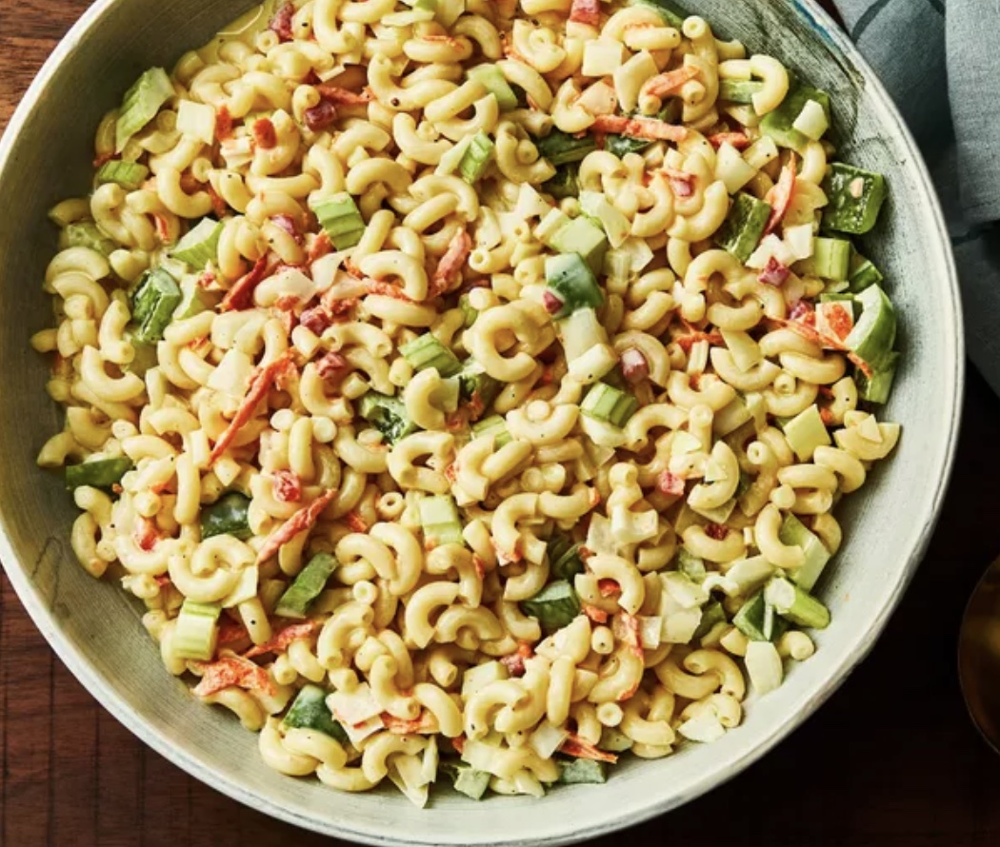

Macaroni Salad

Description
This macaroni salad always gets lots of compliments. It's an easy recipe to make and has a pleasing taste that everyone seems to love!
Ingredients
- Macaroni: Of course, you’ll need macaroni noodles!
- Condiments: A creamy blend of mayonnaise and yellow mustard adds tons of flavor.
- Sugar and vinegar: White sugar adds a dose of sweetness, which is pleasantly balanced by white vinegar.
- Seasonings: This macaroni salad is simply seasoned with salt and ground black pepper.
- Vegetables: You’ll need celery, an onion, and a bell pepper. Grated carrots and pimento peppers are optional, but they add welcome flavor and color.
Steps
- Cook the macaroni in salted water.
- Mix the mayonnaise, sugar, vinegar, mustard, and seasonings together.
- Stir in the macaroni and remaining ingredients. Chill in the refrigerator.